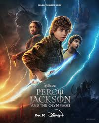
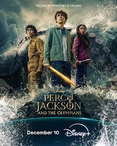

Season one aired in December 2023 on Disney+. Based on the first book in the series, The Lightning Thief, this season follows 12-year-old Percy as he grapples with his new identity and begins his quest across American to retrieve Zeus' stolen masterbolt.
Season two, which aired this past December, continues Percy's story and closely follows the second book in the series, titled The Sea of Monsters. Here, Percy and his friends must travel through the dangerous Sea of Monsters to collect the Golden Fleece -- a magical healing cloth -- in order to save Camp Half-Blood and heal the tree that provides the camp's protective border.